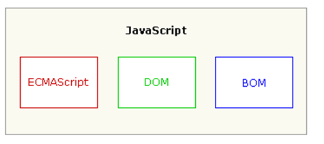

一、js基础
4.控制语句
if/else/else if
switch (字符串)
三元运算符 条件？值1:值2; (条件)null,false,0,'',undefined,NaN为假,其它都为真
for/while/do.while 


七、js函数调用的四种方法：


 浏览器对象模型
浏览器对象模型
DOM Window ：窗口
属性：
status :状态栏
self:自己
top:顶层窗口
parent:父窗口
方法
alert();显示带有一段消息和一个确认按钮的警告框。
confirm();显示带有一段消息以及确认按钮和取消按钮的对话框。弹出确认取消框 点确定会返回true,否则返回false
prompt();弹出一个带有输入文本的对话框 会返回在文本框中输入的值
open();用于打开一个指定的窗口
close();用于关闭当前窗口
setInterval()
setTimeout()
DOM Navigator
appName 浏览器名称
appVersion 浏览器版本
platform 操作系统
DOM Screen
DOM History
go()//数字
back();//后退 go(-1)
forward()//前进 go(1)
DOM Location
href属性:设置或返回完整的 URL。
Netscape公司开发的一种基于对象和事件驱动的脚本语言 ，无需编译，可由浏览器直接解释运行，JavaScript 是一种 弱类型语言，由ECMAScript来维护。
特点：交互性（它可以做的就是信息的动态交互）安全性（不允许直接访问本地硬盘）跨平台性（只要是可以解释Js的浏览器都可以执行，和平台无关）
二、JavaScript语言组成
一个完整 JavaScript实现由以下3个部分组成：
核心（ECMAScript）文档对象模型（DOM）浏览器对象模型（BOM）

三、JavaScript与Html的结合方式
编写JavaScript 三种方式：内部JS和外部JS
1.直接在事件中写
onclick="javascript:alert('Hello World')"
2. 通过<script>标签写
<script type="text/javascript">
//alert("Hello World");弹框
document.write("<h1>Hello World!</h1>");
onclick="javascript:alert('Hello World')"
2. 通过<script>标签写
<script type="text/javascript">
//alert("Hello World");弹框
document.write("<h1>Hello World!</h1>");
//在网页上输出//System.out.println("");
</script>
<script>可以写在网页的地方
<script>可以写在网页的地方
一般写在<head>部分除非咱们要网页的body部分打印输出时，才把它放在body部分
3.引入外部js文件
<script type="text/javascript" src="demo3.js" > </script>
注意:
通过这种方式引入外部js文件,在内部所写的js代码是不会执行的。
<script type="text/javascript" src="demo3.js" > </script>
注意:
通过这种方式引入外部js文件,在内部所写的js代码是不会执行的。
四、JavaScript基本语法
变量、函数、运算符区分大小写
1.变量是弱类型的
1.变量是弱类型的
var a = 10;var b = true;var c = "hello";每行结尾的;可有可无，建议编写
两种类型的注释：
单行注释以双斜杠开头（//）多行注释以单斜杠和星号开头（/*），以星号和单斜杠结尾（*/）
2.数据类型： String, Number, Boolean, Array, Object, Null, Undefined.
JavaScript和Java一样存在两种数据类型：
原始值 （存储在栈Stack中简单数据）引用值 （存储在堆heap中对象）
1.Undefined1.变量定义了，但是没有赋值2.通过typeof()测试，结果也是undefined2.Null1.通过alert()直接输出，得到一个null结果2.通过typeof()测试，它的结果是一个Object3.Boolean看赋值为true/false非0都为真0都为假4.Number不区分整数与小数都认为是number5.StringJavaScript中字符串是原始数据类型用“”引号引上的未定义 直接拿变量用,这样使用是语法错var s="1"//定义了一个基本类型的字符串var s = new String("1");//定义了一个String对象基本类型为什么能调方法？s.toString();//说明了javascript是弱数据类型，它底层已经做了转化通过instanceof 运算符解决typeof对象类型判断问题区分 undefined 和 null
变量定义了未初始化/ 访问对象不存在属性 --- undefined访问的对象不存在 --- null
3.运算符
==值相等 ===类型和值都要相等4.控制语句
if/else/else if
switch (字符串)
三元运算符 条件？值1:值2; (条件)null,false,0,'',undefined,NaN为假,其它都为真
for/while/do.while
五、JavaScript 函数的定义
1.第一种方式

2.第二种方式

3.第三种方式 参数：前面都是参数，函数体是最后一个参数，不推荐使用
3.第三种方式 参数：前面都是参数，函数体是最后一个参数，不推荐使用
六、js方法的提升
1、
2、
3、
4、
六、变量：
七、js函数调用的四种方法：
JavaScript functions can be invoked in 4 different ways.
Each method differs in how this is initialized.
1、
2.
3.
4.
六、JavaScript 全局函数
//parseInt();转整数
//parseFloat();//转小数
//isNaN()//判断是否为数字 为数字返回false 不为数字返回true
//eval() eval() 函数可计算某个字符串，并执行其中的的 JavaScript 代码。
//escape() 函数可对字符串进行编码，这样就可以在所有的计算机上读取该字符串。
//unescape() 函数可对通过 escape() 编码的字符串进行解码。
七、JavaScript常用对象介绍//parseFloat();//转小数
//isNaN()//判断是否为数字 为数字返回false 不为数字返回true
//eval() eval() 函数可计算某个字符串，并执行其中的的 JavaScript 代码。
//escape() 函数可对字符串进行编码，这样就可以在所有的计算机上读取该字符串。
//unescape() 函数可对通过 escape() 编码的字符串进行解码。
1、BOM:
DOM Window ：窗口
属性：
status :状态栏
self:自己
top:顶层窗口
parent:父窗口
方法
alert();显示带有一段消息和一个确认按钮的警告框。
confirm();显示带有一段消息以及确认按钮和取消按钮的对话框。弹出确认取消框 点确定会返回true,否则返回false
prompt();弹出一个带有输入文本的对话框 会返回在文本框中输入的值
open();用于打开一个指定的窗口
close();用于关闭当前窗口
setInterval()
setTimeout()
DOM Navigator
appName 浏览器名称
appVersion 浏览器版本
platform 操作系统
DOM Screen
DOM History
go()//数字
back();//后退 go(-1)
forward()//前进 go(1)
DOM Location
href属性:设置或返回完整的 URL。